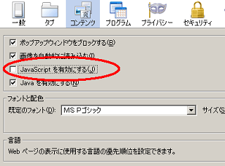

ジャバスクリプトによるブログ広告の掲載
ブログでジャバスクリプトを利用する機会はほとんどないと思います。
HTMLやCSSぐらいまでは必要になるとは思いますが、JavaScriptとかcgi、perlあたりになってくるとプログラムの領域に入ってきますので、既存のツールをブログに導入するケースが多いと思います。
なので、ジャバスクリプトの記述方法を知らなくても、特に困ったことはおこらないと思いますが、ブログのページ内で特定の箇所だけを動かしたい場合には活用してみるとよいかもしれません。
例えば、画像をクリックすれば、クリックするだけで画像だけが次々に動かすのにはJavascriptが使用されています。この場合、htmlファイルはひとつだけですみますので、画像の枚数分のページを作成する必要はありません。
これをジャバスクリプトなしで利用するとなると、画像の枚数分だけhtmlファイルを用意して画像を張り付けておき、その画像ページへ移動することになるため、膨大な量のhtmlファイルが必要になります。
あるいは、マウスオーバーと呼ばれているものになりますが、メニューの箇所などでマウスを表示するだけで詳細な内部リンクを表示させるのに使用されています。つまり、ジャバスクリプトはページ全体を更新することなしに、必要な箇所だけ動かせるメリットがあるわけです。
ただ、そもそもブラウザ側でOFFにしていたらジャバスクリプトは表示されません。firefox の場合、「ツール - オプション」でチェックをはずせば、簡単に無効にできます。

なので、ブログ上で利用したとしても、ユーザーの環境によって機能しないケースもあるというデメリットがあります。
また、検索エンジンではジャバスクリプトのリンクはたどらないと言われています。
そのような意味で、メニューの箇所などで内部リンクを作成する場合、できるだけa hrefのリンクを使用し、ジャバスクリプトを使用することは避けた方がよいといわれています。
逆にいえば、成果報酬型のアフィリエイトリンクをサイト内で掲載したい場合、ジャバスクリプトの形で掲載すれば、そのリンクをたどらないため、アフィリエイトリンクとはみなされなくなるメリットがあります。
そのような次第で、広告リンクをJavaScriptのリンクに変更してみるのもよいかもしれません。
これの作りかたとしては、ほにゃらら.jsの外部ファイルにアフィリエイトリンクのタグを記述しておいて、通常のページから呼び出すという方法です。document.write('記述させる文字');にてリンクタグのHTMLを記述しておき、その.jsファイルを検索ロボットがたどらないよう、robots.txtでブロックさせるのがよいと思います。
アフィリエイトASPではきちんと反映されているようなので、この方法でSEO的な利点があれば、アフィリエイトリンクを掲載することによるSEO対策上のデメリットを軽減させることができると考えております。